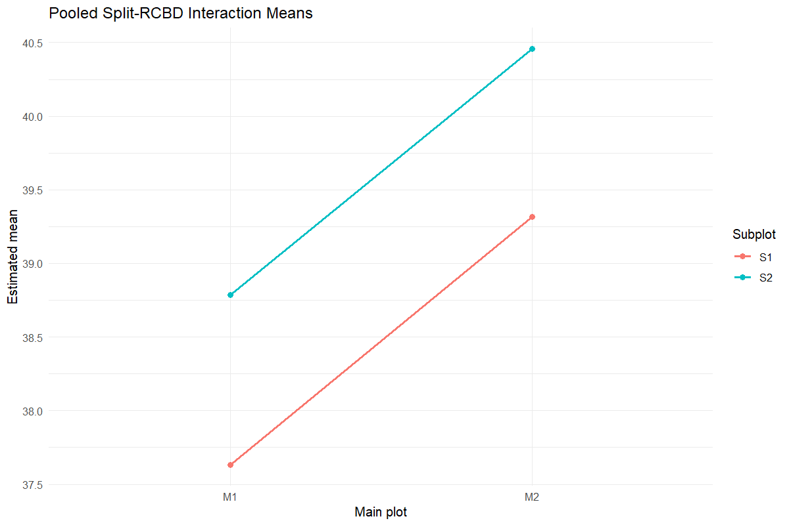
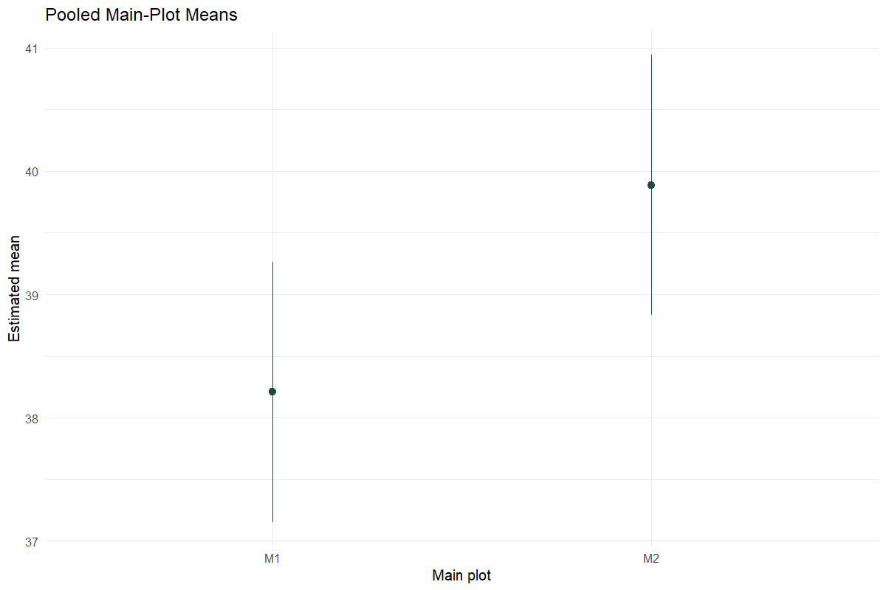
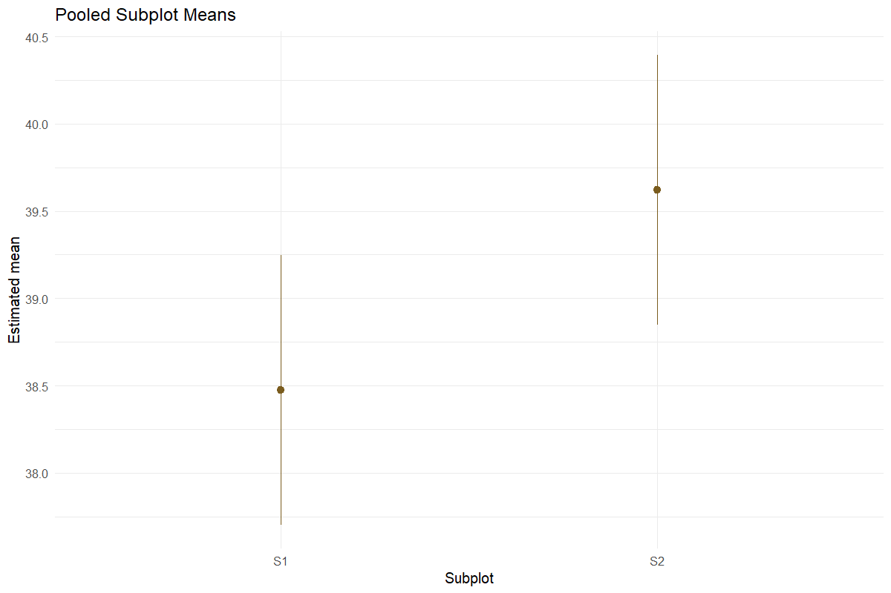
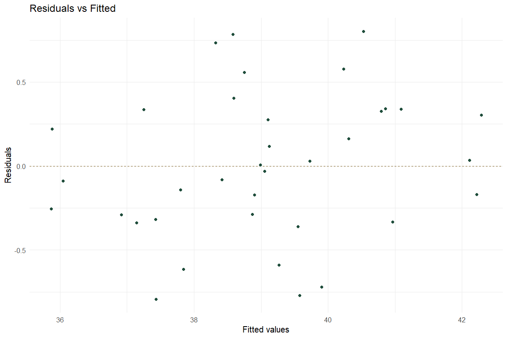
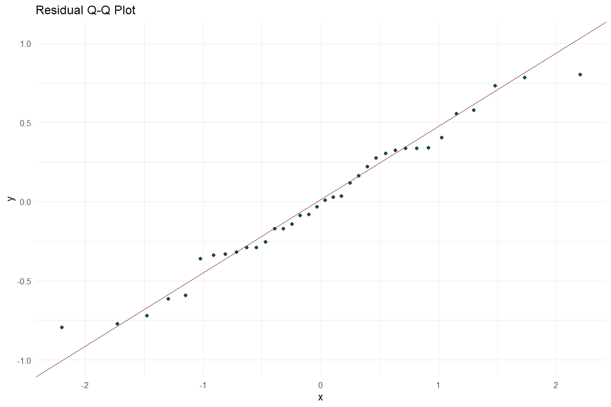
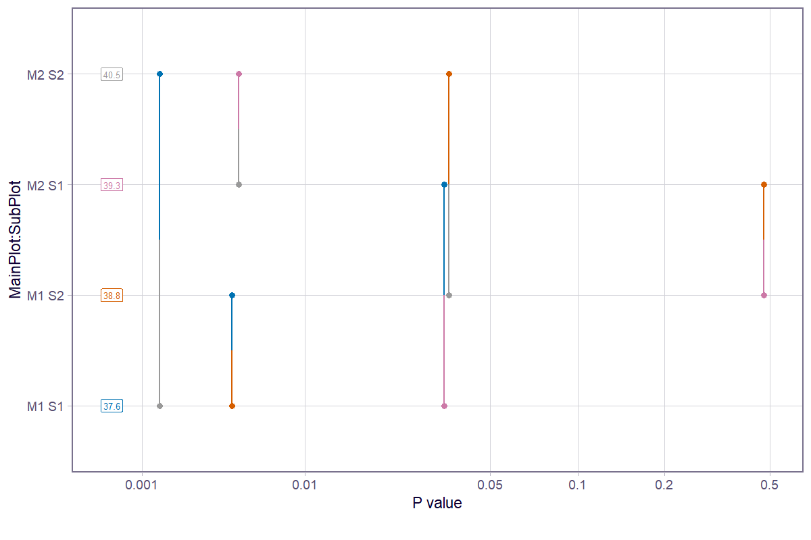

Worked analysis · 1 executable examples
Pooled Split Plot
Combine split-plot trials across years
Question and data
Supply Year, Rep, MainPlot, SubPlot and Value. The same complete treatment structure and replicate count are required in every year.
Read and report the results
The mixed model contains fixed year and treatment interactions, with random Year:Rep and Year:Rep:MainPlot intercepts. Report Satterthwaite df, variance components, estimated means and the specified Fisher LSD contrasts.
Run the examples
From the repository root, restore the locked dependencies and load the app functions. These are source-checkout examples, not an installed package API.
source("tools/example-cases.R")
load_drdesign()In Shiny, select this module from its workflow heading, upload the example CSV, map the columns, review observations and run. Each R example states the analysis options to reproduce.
pooled-split-plot
Synthetic teaching data; not evidence from a field experiment.
Input
| Year | Rep | Main-plot factor | Subplot factor | Value |
|---|---|---|---|---|
| 2023.000 | R1 | M1 | S1 | 38.333 |
| 2024.000 | R1 | M1 | S1 | 36.639 |
| 2025.000 | R1 | M1 | S1 | 36.098 |
| 2023.000 | R2 | M1 | S1 | 37.588 |
| 2024.000 | R2 | M1 | S1 | 38.997 |
| 2025.000 | R2 | M1 | S1 | 36.800 |
| 2023.000 | R3 | M1 | S1 | 35.614 |
| 2024.000 | R3 | M1 | S1 | 39.368 |
Showing up to 8 of 36 observations. The CSV contains every row.
Analysis
data <- read_pasted_table(pooled_split_plot_example)
data$Value <- data$Value+sin(seq_len(nrow(data))*1.7)
result <- run_pooled_split_plot(data,include_pwpp=TRUE)Computed output
dataset 36 rows
| Year | Rep | Main-plot factor | Subplot factor | Value |
|---|---|---|---|---|
| 2023 | R1 | M1 | S1 | 38.333 |
| 2024 | R1 | M1 | S1 | 36.639 |
| 2025 | R1 | M1 | S1 | 36.098 |
| 2023 | R2 | M1 | S1 | 37.588 |
| 2024 | R2 | M1 | S1 | 38.997 |
| 2025 | R2 | M1 | S1 | 36.800 |
| 2023 | R3 | M1 | S1 | 35.614 |
| 2024 | R3 | M1 | S1 | 39.368 |
| 2025 | R3 | M1 | S1 | 39.243 |
| 2023 | R1 | M2 | S1 | 36.627 |
| 2024 | R1 | M2 | S1 | 39.052 |
| 2025 | R1 | M2 | S1 | 42.150 |
| 2023 | R2 | M2 | S1 | 38.583 |
| 2024 | R2 | M2 | S1 | 37.656 |
| 2025 | R2 | M2 | S1 | 41.118 |
| 2023 | R3 | M2 | S1 | 40.809 |
| 2024 | R3 | M2 | S1 | 38.679 |
| 2025 | R3 | M2 | S1 | 39.193 |
| 2023 | R1 | M1 | S2 | 38.997 |
| 2024 | R1 | M1 | S2 | 39.308 |
| 2025 | R1 | M1 | S2 | 37.231 |
| 2023 | R2 | M1 | S2 | 37.111 |
| 2024 | R2 | M1 | S2 | 40.471 |
| 2025 | R2 | M1 | S2 | 39.381 |
| 2023 | R3 | M1 | S2 | 35.958 |
| 2024 | R3 | M1 | S2 | 39.182 |
| 2025 | R3 | M1 | S2 | 41.431 |
| 2023 | R1 | M2 | S2 | 38.733 |
| 2024 | R1 | M2 | S2 | 38.805 |
| 2025 | R1 | M2 | S2 | 42.590 |
| 2023 | R2 | M2 | S2 | 41.199 |
| 2024 | R2 | M2 | S2 | 39.025 |
| 2025 | R2 | M2 | S2 | 40.632 |
| 2023 | R3 | M2 | S2 | 42.049 |
| 2024 | R3 | M2 | S2 | 41.328 |
| 2025 | R3 | M2 | S2 | 39.754 |
anova 7 rows
| Source / term | SS | MS | Numerator df | Denominator df | F | p-value |
|---|---|---|---|---|---|---|
| Year | 0.949 | 0.474 | 2 | 12.000 | 0.968 | 0.408 |
| MainPlot | 2.940 | 2.940 | 1 | 12.000 | 5.997 | 0.031 |
| SubPlot | 11.831 | 11.831 | 1 | 12.000 | 24.134 | <0.001 |
| MainPlot:SubPlot | 0.001 | 0.001 | 1 | 12.000 | 0.001 | 0.974 |
| Year:MainPlot | 1.309 | 0.655 | 2 | 12.000 | 1.335 | 0.299 |
| Year:SubPlot | 0.090 | 0.045 | 2 | 12.000 | 0.092 | 0.913 |
| Year:MainPlot:SubPlot | 4.879 | 2.439 | 2 | 12.000 | 4.976 | 0.027 |
model_info 9 rows
| Metric | Value |
|---|---|
| Formula | Value ~ Year + (1 | Year:Rep) + MainPlot * SubPlot + Year:(MainPlot * SubPlot) + (1 | Year:Rep:MainPlot) |
| Degrees of freedom | Satterthwaite |
| Comparison method | Fisher LSD (unadjusted pairwise contrasts) |
| CD formula | qt(1 - alpha / 2, df) * SE |
| Years | 3.000 |
| Replications per year | 3.000 |
| Main-plot levels | 2.000 |
| Subplot levels | 2.000 |
| Residual normality p-value | 0.545 |
fixed_effects 12 rows
| Source / term | Estimate | SE | df | t | p-value |
|---|---|---|---|---|---|
| (Intercept) | 37.178 | 0.887 | 14.742 | 41.903 | <0.001 |
| Year2024 | 1.156 | 1.255 | 14.742 | 0.922 | 0.372 |
| Year2025 | 0.202 | 1.255 | 14.742 | 0.161 | 0.874 |
| MainPlotM2 | 1.494 | 1.255 | 14.742 | 1.191 | 0.252 |
| SubPlotS2 | 0.177 | 0.572 | 12.000 | 0.309 | 0.763 |
| MainPlotM2:SubPlotS2 | 1.811 | 0.808 | 12.000 | 2.240 | 0.045 |
| Year2024:MainPlotM2 | -1.367 | 1.775 | 14.742 | -0.770 | 0.453 |
| Year2025:MainPlotM2 | 1.945 | 1.775 | 14.742 | 1.096 | 0.291 |
| Year2024:SubPlotS2 | 1.142 | 0.808 | 12.000 | 1.413 | 0.183 |
| Year2025:SubPlotS2 | 1.790 | 0.808 | 12.000 | 2.214 | 0.047 |
| Year2024:MainPlotM2:SubPlotS2 | -1.873 | 1.143 | 12.000 | -1.638 | 0.127 |
| Year2025:MainPlotM2:SubPlotS2 | -3.606 | 1.143 | 12.000 | -3.154 | 0.008 |
random_effect_variance 3 rows
| grp | var1 | var2 | vcov | sdcor |
|---|---|---|---|---|
| Year:Rep:MainPlot | (Intercept) | NA | 1.871 | 1.368 |
| Year:Rep | (Intercept) | NA | 0.000 | 0.000 |
| Residual | NA | NA | 0.490 | 0.700 |
main_means 2 rows
| Main-plot factor | Estimated mean | SE | df | CI lower | CI upper | t | p-value |
|---|---|---|---|---|---|---|---|
| M1 | 38.208 | 0.485 | 12.000 | 37.152 | 39.265 | 78.789 | <0.001 |
| M2 | 39.888 | 0.485 | 12.000 | 38.831 | 40.945 | 82.252 | <0.001 |
Results are averaged over the levels of: Year, SubPlot
Degrees-of-freedom method: satterthwaite
Confidence level used: 0.95
sub_means 2 rows
| Subplot factor | Estimated mean | SE | df | CI lower | CI upper | t | p-value |
|---|---|---|---|---|---|---|---|
| S1 | 38.475 | 0.362 | 14.742 | 37.702 | 39.248 | 106.220 | <0.001 |
| S2 | 39.621 | 0.362 | 14.742 | 38.848 | 40.395 | 109.385 | <0.001 |
Results are averaged over the levels of: Year, MainPlot
Degrees-of-freedom method: satterthwaite
Confidence level used: 0.95
interaction_means 4 rows
| Main-plot factor | Subplot factor | Estimated mean | SE | df | CI lower | CI upper | t | p-value |
|---|---|---|---|---|---|---|---|---|
| M1 | S1 | 37.631 | 0.512 | 14.742 | 36.538 | 38.725 | 73.462 | <0.001 |
| M2 | S1 | 39.319 | 0.512 | 14.742 | 38.225 | 40.412 | 76.755 | <0.001 |
| M1 | S2 | 38.785 | 0.512 | 14.742 | 37.692 | 39.879 | 75.715 | <0.001 |
| M2 | S2 | 40.457 | 0.512 | 14.742 | 39.364 | 41.551 | 78.979 | <0.001 |
Results are averaged over the levels of: Year
Degrees-of-freedom method: satterthwaite
Confidence level used: 0.95
cd_summary 4 rows
| Comparison | Comparisons | Minimum CD | Maximum CD | Mean CD | Minimum df | Maximum df |
|---|---|---|---|---|---|---|
| Main plot means | 1.000 | 1.494 | 1.494 | 1.494 | 12.000 | 12.000 |
| Subplot means | 1.000 | 0.508 | 0.508 | 0.508 | 12.000 | 12.000 |
| Subplot means within main plot | 2.000 | 0.719 | 0.719 | 0.719 | 12.000 | 12.000 |
| Main-plot means within subplot | 2.000 | 1.546 | 1.546 | 1.546 | 14.742 | 14.742 |
lsd_main 1 rows
| contrast | estimate | SE | df | CI lower | CI upper | t | p-value | Critical t | CD |
|---|---|---|---|---|---|---|---|---|---|
| M1 - M2 | -1.680 | 0.686 | 12.000 | -3.174 | -0.185 | -2.449 | 0.031 | 2.179 | 1.494 |
Results are averaged over the levels of: Year, SubPlot
Degrees-of-freedom method: satterthwaite
Confidence level used: 0.95
lsd_sub 1 rows
| contrast | estimate | SE | df | CI lower | CI upper | t | p-value | Critical t | CD |
|---|---|---|---|---|---|---|---|---|---|
| S1 - S2 | -1.147 | 0.233 | 12.000 | -1.655 | -0.638 | -4.913 | <0.001 | 2.179 | 0.508 |
Results are averaged over the levels of: Year, MainPlot
Degrees-of-freedom method: satterthwaite
Confidence level used: 0.95
lsd_interaction 6 rows
| contrast | estimate | SE | df | CI lower | CI upper | t | p-value | Critical t | CD |
|---|---|---|---|---|---|---|---|---|---|
| M1 S1 - M2 S1 | -1.687 | 0.724 | 14.742 | -3.234 | -0.141 | -2.329 | 0.035 | 2.135 | 1.546 |
| M1 S1 - M1 S2 | -1.154 | 0.330 | 12.000 | -1.873 | -0.435 | -3.497 | 0.004 | 2.179 | 0.719 |
| M1 S1 - M2 S2 | -2.826 | 0.724 | 14.742 | -4.373 | -1.280 | -3.901 | 0.001 | 2.135 | 1.546 |
| M2 S1 - M1 S2 | 0.533 | 0.724 | 14.742 | -1.013 | 2.079 | 0.736 | 0.473 | 2.135 | 1.546 |
| M2 S1 - M2 S2 | -1.139 | 0.330 | 12.000 | -1.858 | -0.420 | -3.451 | 0.005 | 2.179 | 0.719 |
| M1 S2 - M2 S2 | -1.672 | 0.724 | 14.742 | -3.218 | -0.125 | -2.308 | 0.036 | 2.135 | 1.546 |
Results are averaged over the levels of: Year
Degrees-of-freedom method: satterthwaite
Confidence level used: 0.95
lsd_sub_within_main 2 rows
| contrast | Main-plot factor | estimate | SE | df | CI lower | CI upper | t | p-value | Critical t | CD |
|---|---|---|---|---|---|---|---|---|---|---|
| S1 - S2 | M1 | -1.154 | 0.330 | 12.000 | -1.873 | -0.435 | -3.497 | 0.004 | 2.179 | 0.719 |
| S1 - S2 | M2 | -1.139 | 0.330 | 12.000 | -1.858 | -0.420 | -3.451 | 0.005 | 2.179 | 0.719 |
Results are averaged over the levels of: Year
Degrees-of-freedom method: satterthwaite
Confidence level used: 0.95
lsd_main_within_sub 2 rows
| contrast | Subplot factor | estimate | SE | df | CI lower | CI upper | t | p-value | Critical t | CD |
|---|---|---|---|---|---|---|---|---|---|---|
| M1 - M2 | S1 | -1.687 | 0.724 | 14.742 | -3.234 | -0.141 | -2.329 | 0.035 | 2.135 | 1.546 |
| M1 - M2 | S2 | -1.672 | 0.724 | 14.742 | -3.218 | -0.125 | -2.308 | 0.036 | 2.135 | 1.546 |
Results are averaged over the levels of: Year
Degrees-of-freedom method: satterthwaite
Confidence level used: 0.95
diagnostics 36 rows
| Observation | Fitted | Residual |
|---|---|---|
| 1 | 38.415 | -0.081 |
| 2 | 37.432 | -0.793 |
| 3 | 35.878 | 0.220 |
| 4 | 37.252 | 0.337 |
| 5 | 38.989 | 0.008 |
| 6 | 37.139 | -0.339 |
| 7 | 35.869 | -0.255 |
| 8 | 38.583 | 0.785 |
| 9 | 39.125 | 0.118 |
| 10 | 36.916 | -0.289 |
| 11 | 38.319 | 0.733 |
| 12 | 42.115 | 0.035 |
| 13 | 38.871 | -0.288 |
| 14 | 37.799 | -0.143 |
| 15 | 40.793 | 0.325 |
| 16 | 40.231 | 0.578 |
| 17 | 39.269 | -0.591 |
| 18 | 39.553 | -0.360 |
| 19 | 38.591 | 0.405 |
| 20 | 38.751 | 0.557 |
| 21 | 37.845 | -0.614 |
| 22 | 37.428 | -0.318 |
| 23 | 40.308 | 0.163 |
| 24 | 39.106 | 0.275 |
| 25 | 36.046 | -0.088 |
| 26 | 39.902 | -0.720 |
| 27 | 41.092 | 0.339 |
| 28 | 38.904 | -0.171 |
| 29 | 39.576 | -0.771 |
| 30 | 42.286 | 0.304 |
| 31 | 40.859 | 0.340 |
| 32 | 39.056 | -0.031 |
| 33 | 40.965 | -0.332 |
| 34 | 42.218 | -0.170 |
| 35 | 40.526 | 0.802 |
| 36 | 39.725 | 0.028 |






Reporting conventions
Tables: estimates and standard errors to 3 decimals; p-values below 0.001 shown as <0.001. Very small or large values use scientific notation. NA means unavailable or not applicable. CSV files retain numerical precision. Confidence levels and multiplicity corrections follow the stated analysis settings; shared letters indicate non-rejection, not equivalence.